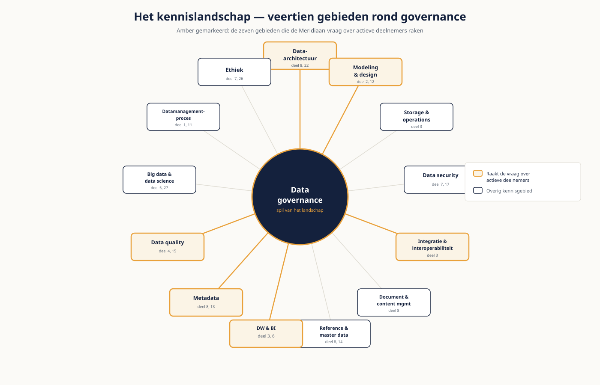

Deel 8 — Het complete kennislandschap
Niveau 1 — Fundament · Reader
Voorbereiding, geen vervanging
Deze cursusmap is onafhankelijk ontwikkeld door Ductus B.V. Ductus is niet gelieerd aan, geaccrediteerd door of goedgekeurd door DAMA International, IIBA, IAPP, de EDM Association of Microsoft.
Dit materiaal bereidt voor op de genoemde examens en vervangt het officiële examenmateriaal niet. Bodies of knowledge, handboeken en examenblueprints worden hier niet gereproduceerd; deelnemers schaffen die bronnen zelf aan.
Alle genoemde merken zijn eigendom van hun respectieve houders. Examengegevens gecontroleerd in augustus 2026 — verifieer vóór inschrijving bij de bron.
1. Waarom dit deel bestaat
Dit deel is er om een reden die we niet verbergen: het Fundamentals-examen toetst alle veertien kennisgebieden, en de eerste zeven delen hebben er zeven diepgaand behandeld. De overige komen in je werk pas jaren later aan bod, of nooit — maar op het examen staan ze wél. Dit deel dekt ze af op het niveau dat daar gevraagd wordt.
Dat maakt het niet tot vulling. De gebieden hieronder verklaren waar de eerdere delen tegenaan liepen. De weeskinderen uit deel 3 en 5 zijn een masterdataprobleem. De scheidingsstukken in de gedeelde map uit deel 2 en 7 zijn contentmanagement. De vraag waar een getal vandaan komt uit deel 3 is metadata. Je kent de symptomen al; hier krijgen ze een naam en een vindplaats.
Leerdoelen
- Je benoemt alle veertien kennisgebieden en koppelt een praktijkvraag aan het juiste gebied.
- Je beschrijft wat data-architectuur als kennisgebied inhoudt en hoe het zich verhoudt tot modelleren.
- Je onderscheidt de vier soorten metadata en legt uit waarom metadata onzichtbaar blijft tot je het nodig hebt.
- Je benoemt de vier MDM-stijlen en het begrip golden record.
- Je herkent ongestructureerde informatie als een eigen beheerdomein met eigen risico's.
- Je beschrijft de ML-levensloop op hoofdlijnen en benoemt waar governance meebeweegt.
- Je schat de volwassenheid van een organisatie in op een vijfpuntsschaal en verantwoordt die schatting.
2. Data-architectuur
Modelleren, uit deel 2, legt de betekenis van één domein vast. Data-architectuur gaat over de samenhang op ondernemingsniveau: welke data waar thuishoort, welk systeem waarvoor de bron is, en hoe het landschap zich mag ontwikkelen.
| Artefact | Beantwoordt | Bij Meridiaan |
|---|---|---|
| Enterprise datamodel | Welke kernbegrippen kent de organisatie? | Deelnemer, Werkgever, Regeling, Belegging |
| Datadomeinindeling | Welke samenhangende gebieden onderscheiden we? | De vier businessdomeinen |
| Bron-van-waarheid-overzicht | Welk systeem is leidend per gegeven? | Onduidelijk tijdens de migratie — daar zit de pijn |
| Datastroomlandschap | Hoe beweegt data tussen systemen? | De ketenplaat uit deel 3 |
| Architectuurprincipes | Welke keuzes staan vast? | Bijvoorbeeld: één bron per gegeven |
De data-architect is de rol die deze samenhang bewaakt. Hij beslist niet over betekenis — dat doet de data owner — maar hij bewaakt dat de betekenis consistent blijft over systemen heen. In een migratie zoals bij Meridiaan is dat de zwaarste opgave: twee landschappen naast elkaar, met per gegeven de vraag welk systeem nu leidend is.
De verbinding met wat je al weet
Vier definities van "actieve deelnemer" is een governanceprobleem én een architectuurprobleem. Governance bepaalt wie beslist; architectuur zorgt dat het besluit vervolgens overal doorwerkt. Zonder het eerste is er geen besluit, zonder het tweede blijft het besluit op papier.
3. Metadata
Metadata is data over data. Het is het meest onzichtbare kennisgebied en het eerste waar je naar grijpt zodra er iets misgaat.
| Soort | Wat het beschrijft | Voorbeeld |
|---|---|---|
| Business-metadata | Betekenis in bedrijfstaal | De definitie van "actieve deelnemer" en wie hem vaststelde |
| Technische metadata | Structuur en opslag | Tabelnaam, datatype, veldlengte, sleutels |
| Operationele metadata | Wat er is gebeurd | Wanneer de laadtaak draaide, hoeveel rijen, hoeveel fouten |
| Governance-metadata | Wie en wat mag | Eigenaar, classificatie, bewaartermijn |
Drie instrumenten
- Business glossary: de vastgelegde definities, in bedrijfstaal. Bij Meridiaan bestaat die als spreadsheet met vierhonderd termen zonder eigenaar — dat is een glossary op papier, niet in gebruik.
- Datacatalogus: een doorzoekbaar overzicht van wat er is, waar het staat en van wie het is.
- Lineage: het pad van bron tot rapport. Technische lineage laat zien welke tabellen betrokken zijn; business lineage laat zien welke betekenisstappen zijn genomen. De tweede is zeldzamer en waardevoller.
De vraag uit deel 3 — waar komt dit getal vandaan — is een metadatavraag. Dat een organisatie hem niet kan beantwoorden, komt zelden doordat de informatie niet bestaat; ze is alleen nergens vastgelegd op een plek waar iemand hem zoekt.
4. Master- en referentiedata
In deel 2 kwamen deze soorten al langs; hier gaat het over het beheer ervan. Masterdata beschrijft de kernobjecten waar de organisatie om draait. Het probleem is bijna altijd hetzelfde: hetzelfde object bestaat meerdere keren, in meerdere systemen, met afwijkende gegevens.
Het golden record
Het golden record is de samengestelde, meest betrouwbare versie van een object. Het ontstaat door records te vergelijken, samen te voegen en per veld te bepalen welke bron voorrang heeft — dat laatste heet survivorship. Bij Meridiaan is de werkgever met drie adressen precies dit vraagstuk: welk adres wint, en waarom?
| MDM-stijl | Hoe het werkt | Kenmerk |
|---|---|---|
| Registry | Alleen verwijzingen; de bronsystemen blijven leidend | Licht, snel in te voeren, lost inconsistentie niet op |
| Consolidation | Kopieën worden centraal samengevoegd voor rapportage | Goed voor analyse, verandert de bron niet |
| Coexistence | Centraal samengevoegd én teruggeschreven naar de bronnen | Zwaarder, maar de bron verbetert mee |
| Transaction | Het centrale systeem is de bron; alles gebruikt dat | Het schoonst en het duurst om in te voeren |
Referentiedata — codelijsten en classificaties — heeft een eigen probleem: het wijzigt zelden, waardoor niemand merkt dat het beheer nergens is belegd. Tot er een code verandert, en dan blijkt dat vijf systemen een eigen kopie van de lijst hebben.
5. Document- en contentmanagement
Het grootste deel van wat een organisatie bewaart is ongestructureerd: correspondentie, notities, gescande stukken, presentaties. Het is het kennisgebied met het zwakste beheer en het hoogste risico, en het valt structureel buiten het zicht van datamanagementprogramma's.
- Records management: welke documenten hebben bewijswaarde, en wat is daarvoor de bewaartermijn?
- Retentie en vernietiging: de twee vergeten levensloopfasen uit deel 1, die hier het pijnlijkst uitpakken.
- Vindbaarheid: bij een inzageverzoek of een geschil moet je documenten kunnen terugvinden. Dat is de directe koppeling met deel 7.
- Versiebeheer: welke versie gold op welk moment — bij een pensioenuitvoerder een terugkerende vraag.
De blinde vlek
De scheidingsstukken van een deelnemer liggen bij Meridiaan als PDF in een gedeelde map. Ze bevatten bijzondere persoonsgegevens, er staat geen bewaartermijn op, niemand is er eigenaar van, en ze zijn niet doorzoekbaar. Elk van de eerdere delen raakt hieraan — en geen enkel datamanagementprogramma begint hier.
6. Datawarehousing en BI als kennisgebied
Deel 3 en 6 behandelden de praktijk: de keten en de presentatie. Als kennisgebied gaat het om de functie — het geschikt maken van data voor sturing en verantwoording, en het beheer van die functie.
- De semantische laag: de plek waar bedrijfsbegrippen worden vertaald naar technische velden. Dit is waar deel 2 en deel 6 elkaar raken.
- Self-service BI: gebruikers bouwen zelf rapportages. Dat is winst in snelheid en een risico voor consistentie — precies hoe drie afdelingen aan drie verschillende deelnemersaantallen komen.
- Het governancevraagstuk dat daarbij hoort: wie mag publiceren, welke rapportage is officieel, en wie beslist dat? Deel 16 werkt dat uit.
7. Big data en data science
Het kennisgebied gaat over analyse op schaal en over modellen die leren van data. Voor niveau 1 is het genoeg dat je de levensloop van een model kent en weet waar governance meebeweegt.
| Fase | Wat er gebeurt | Waar governance meebeweegt |
|---|---|---|
| Vraag en data verzamelen | Bepalen wat je wilt voorspellen en waarmee | Grondslag, doelbinding, geschiktheid van de brondata |
| Model trainen | Patronen leren uit historische data | Bias in de historie wordt bias in het model |
| Valideren | Toetsen of het model werkt op nieuwe gevallen | Wie beoordeelt en accepteert het model? |
| In gebruik nemen | Het model beïnvloedt echte besluiten | Uitlegbaarheid, menselijk toezicht, bezwaarmogelijkheid |
| Monitoren | Presteert het model nog? | Drift signaleren; wie grijpt in en wanneer? |
De vier V's — volume, snelheid, verscheidenheid en betrouwbaarheid — worden vaak genoemd als kenmerk van big data. Ze zijn nuttig als geheugensteun en misleidend als criterium: de meeste organisaties hebben geen big data-probleem maar een gewoon datamanagementprobleem op een grotere schaal. Deel 27 werkt AI-governance volledig uit.
8. Volwassenheid
Volwassenheidsmodellen meten hoe goed het vak in een organisatie is ingericht. De niveaus verschillen per model in naam maar niet in strekking.
| Niveau | Kenmerk | Herken je aan |
|---|---|---|
| 1 — Afwezig of ad hoc | Er gebeurt iets, maar niet met opzet | Kwaliteit hangt af van wie er toevallig werkt |
| 2 — Herhaalbaar | Sommige processen zijn vastgelegd, per afdeling verschillend | Twee afdelingen doen het goed, de rest niet |
| 3 — Gedefinieerd | Organisatiebreed vastgelegd en bekend | Er is beleid, en mensen kennen het |
| 4 — Beheerst | Gemeten en bijgestuurd | Er zijn KPI's waarop daadwerkelijk wordt gestuurd |
| 5 — Geoptimaliseerd | Continu verbeterd, ingebed in de cultuur | Zeldzaam, en vaker geclaimd dan gehaald |
Drie valkuilen
- Streven naar niveau 5 op alles. Dat is duur en zelden nodig; kies per gebied een passend ambitieniveau.
- De meting als doel behandelen in plaats van als vertrekpunt. Een score verandert niets.
- Zelfbeoordeling zonder bewijs. Vraag bij elke score: waaruit blijkt dat?
Meridiaan zit op de meeste gebieden op niveau 1 of 2. Dat is niet uitzonderlijk — het is de normale uitgangssituatie, en het verklaart waarom de eerste stappen uit deel 16 over besluitrechten gaan en niet over tooling.
9. Hoe de gebieden samenhangen
Neem één vraag van Meridiaan en volg hem door het landschap: "hoeveel actieve deelnemers hadden wij op 1 januari?"
| Gebied | Levert | Ontbreekt bij Meridiaan |
|---|---|---|
| Governance | Wie beslist welke definitie geldt | Niemand is aangewezen |
| Modeling | De vastgelegde betekenis van "actief" | Vier varianten in omloop |
| Architectuur | Welk systeem de bron van waarheid is | Onduidelijk tijdens de migratie |
| Integratie | Het pad van bron naar platform | Records vallen weg op een onbekende code |
| Quality | Of de gegevens geschikt zijn voor dit gebruik | Niet gemeten op kritieke elementen |
| Metadata | Waar het getal vandaan komt | Nergens vastgelegd |
| DW en BI | De rapportage zelf | Drie rapportages, drie uitkomsten |
Zeven gebieden voor één vraag. Dat is de reden waarom "de datakwaliteit is slecht" zo'n onbruikbare diagnose is: het probleem zit op zeven plekken tegelijk, en alleen door ze te scheiden kun je bepalen waar je begint.

10. Examenrelevantie en je studieplan
Met dit deel is de examendekking van niveau 1 compleet. Deel 9 is de examentraining: wegingen, tijdmanagement, de één-boek-regel en twee proefexamens. Deel 10 is de capstone.
Wat je nu zou moeten kunnen
- Alle veertien gebieden bij naam noemen, in het Engels, en een praktijkvraag aan het juiste gebied koppelen.
- Per gebied de kernbegrippen herkennen, ook zonder ze te beheersen.
- De verwarparen uit elkaar houden: master versus reference data, validiteit versus juistheid, owner versus custodian, pseudonimiseren versus anonimiseren, integratie versus interoperabiliteit.
- Weten in welk DMBOK-hoofdstuk je iets opzoekt — want tijdens het examen is dat boek je enige hulpmiddel.
Studiemateriaal bij dit deel
Kernbron: de hoofdstukken over data architecture, metadata, reference and master data, document and content management, en big data and data science in de DAMA-DMBOK2 Revised Edition. Dit deel is uitdrukkelijk bedoeld om mét het boek erbij te doorlopen.
Oefen het opzoeken zelf: tijdens het examen is snel de juiste pagina vinden een vaardigheid op zich, en die traint alleen door het te doen.
Examenopzet en wegingen: cdmp.info/exams en dama.org/certification.
Dit materiaal reproduceert geen van deze bronnen en vervangt ze niet.